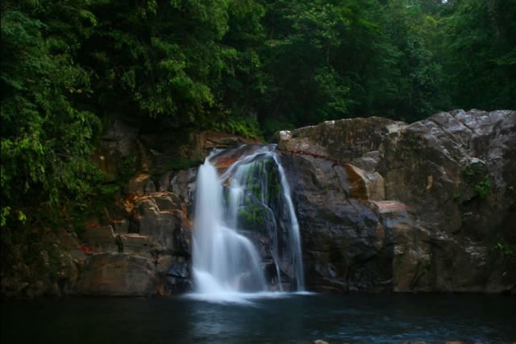
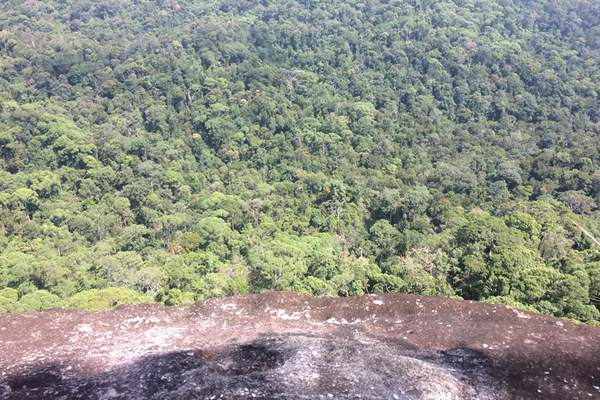
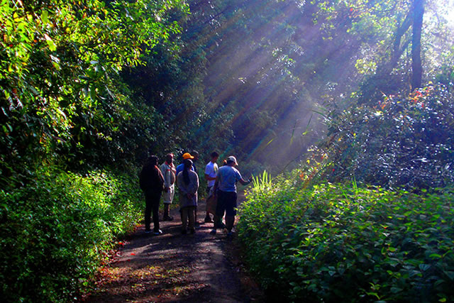
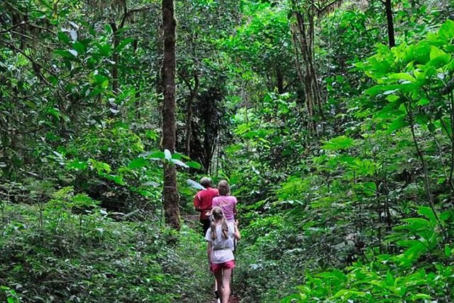
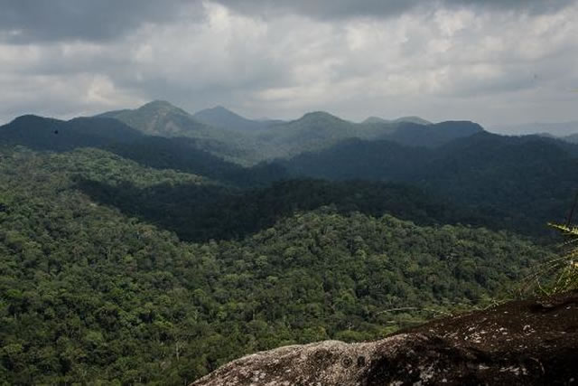
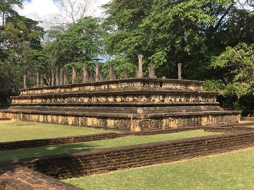
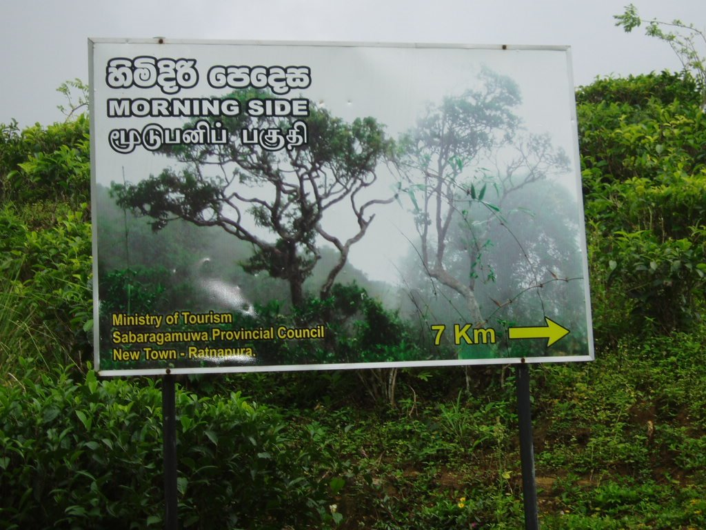
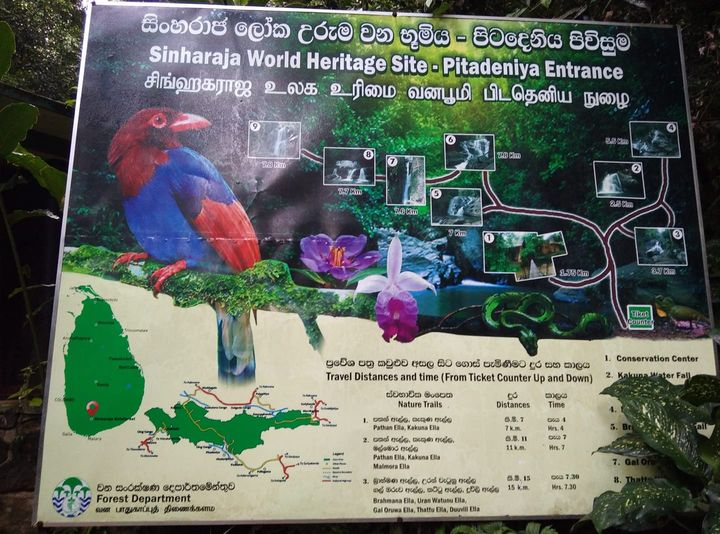

SINHARAJA FOREST
245 rewives
Sabaragamu Province, Sri Lanka





HISTORICAL PLACE IN SRI LANKA
An important ancient site
15,000 LKR one day
SINHARAJA FOREST
Sinharaja Forest Reserve is a forest reserve and a biodiversity hotspot in Sri Lanka. It is of international significance and has been designated a Biosphere Reserve and World Heritage Site by UNESCO.[1] According to International Union for Conservation of Nature (IUCN), Sinharaja is the country's last viable area of primary tropical rainforest. More than 60% of the trees are endemic and many of them are considered rare. 50% of Sri Lankan's endemics species of animals (especially butterfly, amphibians, birds, snakes and fish species). It is home to 95% endemic birds. The hilly virgin rainforest, part of the Sri Lanka lowland rain forests ecoregion, was saved from the worst of commercial logging by its inaccessibility, and was designated a World Biosphere Reserve in 1978 and a World Heritage Site in 1988. Because of the dense vegetation, wildlife is not as easily seen as at dry-zone national parks such as Yala. There are about 3 elephants, and 15 or so[vague] leopards. The most common larger mammal is the endemic purple-faced langur. Birds tend to move in mixed feeding flocks, invariably led by the fearless Sri Lanka crested drongo and the noisy orange-billed babbler. Of Sri Lanka's 26 endemic birds, the 20 rainforest species all occur here, including the elusive red-faced malkoha, green-billed coucal and Sri Lanka blue magpie. Reptiles include the endemic green pit viper and hump-nosed vipers, and there are a large variety of amphibians, especially tree frogs. Invertebrates include the endemic Sri Lankan birdwing butterfly and leeches.
VALU OF SINHARAJA FOREST
The rainforest likely formed during the Jurassic era (from 200 million years to 145 million years ago). This forest encompasses an area of 36,000 hectares (88,960 acres/360 km²).[3] The reserve is only 21 km (13 mi) from east to west, and a maximum of 7 km (4.3 mi) from north to south, but it is a treasure trove of endemic species, including trees, insects, amphibians, reptiles, birds, and mammals. Sinharaja forest vegetation density has been estimated at around 240,000 plants per hectare, the most dense rain forest in Asia.[4]
places




The reserve is well-integrated with the local population who live in some dozens of villages dotted along the border. The villages are more in number along the southern border whilst the presence of some large estates along the northern border has resulted in only a few villages there. The locals collect herbal medicine, edible fruits, nuts, mushrooms, other non-timber forest products including bees honey and a sugary sap collected from a local palm species of the genus Caryota. The sap is converted into jaggery, a local brew and vinegar. Local people walk in the forest to collect the above items when they are not busy with their other agricultural pursuits. In addition, the crystal-clear water coming from dozens of streams is the main water source for all people living around the reserve. For generations, local people trekked through the forest from south to north to make their annual pilgrimage to the Adams Peak. In 2013, UNESCO requested to halt the widening of the ancient road linking Lankagama area to Deniyaya along a 1-km jungle patch inside the protected area after a complaint from The Centre for Environmental and Nature Studies of Sri Lanka. The construction recommenced on August 10, 2020 after prolonged appeals by the people living in villages to the Sri Lankan Government. A group of environmentalists carried out a big social media campaign and asked the Sri Lanka Forest Department, the President, the Ministry of Environment and the Central Environment authority to stop this but the Government of Sri Lanka has decided to go ahead with it to improve the livelihood of poor villagers of the area as it will clear only 0.006% of the total landmass of the forest. Mr. Martin Wijesinhe was one of the most significant people in Sri Lanka in connection to the Sinharaja.[5] He was the unofficial guardian of the Sinharaja. He has been the protector and caretaker of it since the 1950s till his death in 2021.[6] .
LOCATION ON MAP
PLACE TO STAY IN SINHARAJA(Following accommodation list is randomly generated) Hotels & Other Accommodation)
RECOMMENDRD PLACES

SINH HOTEL
Email:-@gmail.comKattu street
Tell:-0798406134

LALITHA HOTEL
Email:-@gmail.comMottu street
Tell:-0714474621

NORA HOTEL
Email:-@gmail.comChapa god street
Tell:-0704406158

YANULA HOTEL
Email:-@gmail.comNuvanga god street
Tell:-0752006134
- Entire house you will have the entire flat for you
- Echanced Clean This host has committed to Sl tro's cleaning process
- Great Location 90% of recent guest gave the location a 5 star rating
- Great Check-in Experience 100% of recent guest gave the check-in process a 5 star rating

COME AND ENJOY THE BEAUTY OF LANKA
open every day, We will work to provide 100% good service